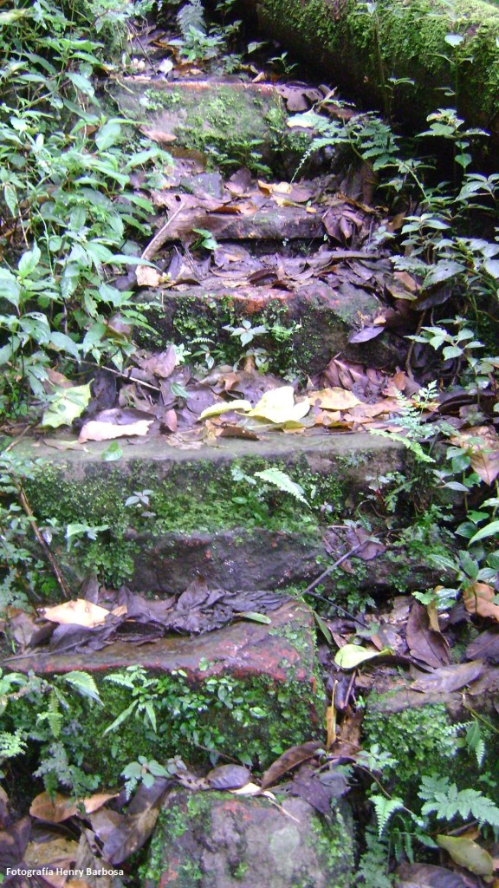

En el mes de abril de 1990 se conformó la Sociedad Montañas de Chicaque, la cual surgió como una iniciativa privada para crear una reserva natural que permitiera proteger el bosque de niebla, con el tiempo se creó el Parque Natural de Chicaque dedicado a la conservación y a la educación ambiental.
Investigadores han encontrado rezagos de presencia de caminos prehispánicos con una antigüedad superior a los 700 años antes de la llegada de los españoles. Los primeros moldes para hacer los caminos fueron las plantas de los pies de los indígenas, Germán Arciniegas en el libro Los Caminos Reales de Colombia, afirma que “la única manera de darle alguna seguridad a la bestia de carga, era con una piedra de apoyo. Por eso hay tramos en que el camino se convierte en escalera. Como si se tratara del ingreso a un palacio.